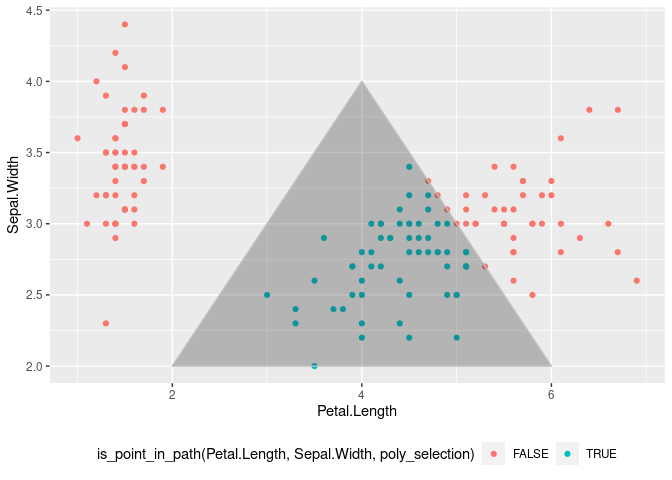
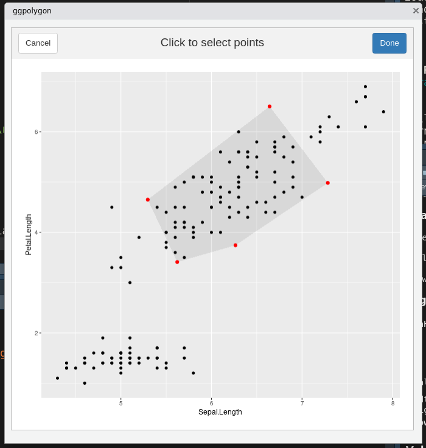

The goal of flowhelperrr is to help you do flow cytometry analysis on R using data frames
library(flowhelperrr) #> Loading required package: shiny #> Loading required package: miniUI library(ggplot2) ## basic example code
Gates can be defined as polygons in a data frame. Such data frames can be used to check what points are inside such polygons.
poly_selection <- data.frame( Petal.Length = c(2,4,6), Sepal.Width = c(2,4,2)) is_point_in_path( iris$Petal.Length, iris$Sepal.Width, poly_selection) #> [1] FALSE FALSE FALSE FALSE FALSE FALSE FALSE FALSE FALSE FALSE FALSE FALSE #> [13] FALSE FALSE FALSE FALSE FALSE FALSE FALSE FALSE FALSE FALSE FALSE FALSE #> [25] FALSE FALSE FALSE FALSE FALSE FALSE FALSE FALSE FALSE FALSE FALSE FALSE #> [37] FALSE FALSE FALSE FALSE FALSE FALSE FALSE FALSE FALSE FALSE FALSE FALSE #> [49] FALSE FALSE TRUE TRUE FALSE TRUE TRUE TRUE FALSE TRUE TRUE TRUE #> [61] TRUE TRUE TRUE TRUE TRUE TRUE TRUE TRUE TRUE TRUE FALSE TRUE #> [73] TRUE TRUE TRUE TRUE TRUE FALSE TRUE TRUE TRUE TRUE TRUE TRUE #> [85] TRUE TRUE TRUE TRUE TRUE TRUE TRUE TRUE TRUE TRUE TRUE TRUE #> [97] TRUE TRUE TRUE TRUE FALSE TRUE FALSE FALSE FALSE FALSE TRUE FALSE #> [109] FALSE FALSE FALSE FALSE FALSE TRUE TRUE FALSE FALSE FALSE FALSE TRUE #> [121] FALSE TRUE FALSE TRUE FALSE FALSE TRUE TRUE FALSE FALSE FALSE FALSE #> [133] FALSE TRUE FALSE FALSE FALSE FALSE TRUE FALSE FALSE FALSE TRUE FALSE #> [145] FALSE FALSE TRUE FALSE FALSE FALSE
Since it is vectorized it can be used as well in NSE
iris2 <- dplyr::mutate( iris, point_in_poly = is_point_in_path( Petal.Length, Sepal.Width, poly_selection)) head(iris2) #> Sepal.Length Sepal.Width Petal.Length Petal.Width Species point_in_poly #> 1 5.1 3.5 1.4 0.2 setosa FALSE #> 2 4.9 3.0 1.4 0.2 setosa FALSE #> 3 4.7 3.2 1.3 0.2 setosa FALSE #> 4 4.6 3.1 1.5 0.2 setosa FALSE #> 5 5.0 3.6 1.4 0.2 setosa FALSE #> 6 5.4 3.9 1.7 0.4 setosa FALSE
ggplot(iris, aes(x = Petal.Length, y = Sepal.Width, colour = is_point_in_path(Petal.Length, Sepal.Width, poly_selection))) + geom_point() + geom_polygon(colour = "gray", alpha = 0.3, data = poly_selection) + theme(legend.position = "bottom")

Gadgets are provided to help with the things that are hard to do exclusively on the command line (such as making an octagonal gate …)
ggpolygon
This gadget allows you to click to form a polygon and returns a data frame that defines such polygon
ggpolygon(iris, "Sepal.Length", "Petal.Length")

To generate the data.frame, type
'data.frame(c(5.29656915230736, 5.62182752573929, 6.26495203684332, 7.28508057169799, 6.64195606059396), c(4.65156384997072, 3.41011046538746, 3.74383449350124, 4.9852878780845, 6.50706944628333))'
Sepal.Length Petal.Length
1 5.296569 4.651564
2 5.621828 3.410110
3 6.264952 3.743834
4 7.285081 4.985288
5 6.641956 6.507069